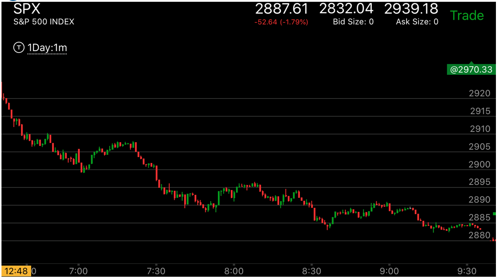
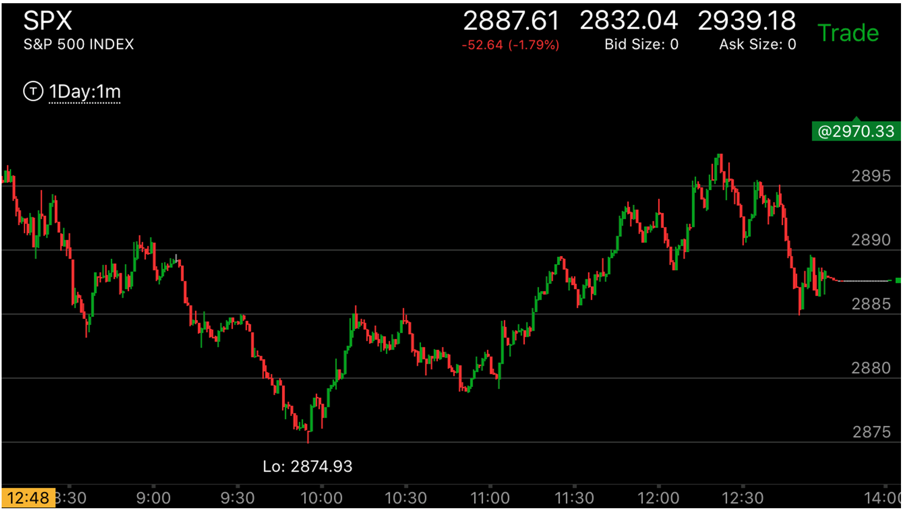
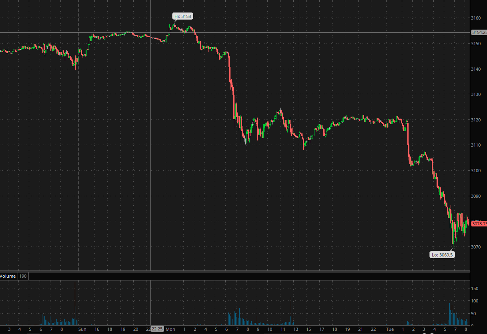

叠加走势在逆势和顺势当中的作用
- 一个下跌的主要走势里，它出现了走平下跌或者某种加速走势，这样它反弹的时候，如果立刻很快反弹，然后再次冲高，走平很久。这样就成了叠加走势。
这个如果有人想要抄底，结果发现很难抄底，它一直不肯下来。结果它在高位徘徊后，一下创新低。上涨走势也是一样。
- 但是在顺势走势当中，叠加走势不会反转。它可以持续运动

图示:开盘后，冲高，9：45它冲高后，立刻拉回，而且出现了5浪下跌。
说明未来一定会继续上涨。

图示:10：10到了低点后，它立刻反弹，走平后，再次反弹，然后走平。
虽然幅度很小。但是形成了叠加走势。它在10:30继续下跌的时候，速度很慢。说明主要走势仍然是下跌


图示：7：00出现了新低后，它开始反弹，这个反弹虽然开始很慢，但是很快就超过了前面高点，
然后很小回调，再次上涨。走平。它的反向走势是叠加浪后走平。这样的走势一定不是一个可以持续的走势。一定会再次下跌。
它第一浪就是加速浪，然后再次冲高，这样就坐实了加速。它的低点一定不是今天的低点。
7：45再次新低后，它反弹，开始反弹很小，然后很快就反弹很大，快速回调后，再次冲高，走平。这样就成了加速走势。8：40也是这样的走势，从一个两段下跌的走势，立刻反弹，然后产生叠加。形成了加速。10：00的新低，是脱离了前面的走势后，出现了三段转折。
它第一次上涨就拉回了。然后一次就上涨幅度很大。很快的拉回，走平后，冲高，立刻下来。从相对论的角度看，它下来太快了。未来应该接近或者超过2885这个点。它再次冲高后，在2885前拉回说明也不是一个顶点，然后越过了这个点。
这样不是加速。11：20它再次走势新高，立刻拉回，出现了两段下跌走势，然后再次缓慢的上涨，再次越过高点，12：00它探了一下走势新高后，立刻拉回，大跌。这样表示未来会冲到这个点。但是到了12:20就不一样了，它冲高后，稍微回调一下，再次快速冲高。
12：25的新高，距离很近，速度很快。这样就成了加速走势。其实反转了。它快速下跌后，拉回。走平在2895.然后大跌。

图示：Monday, 16点在3110创新低后，立刻反弹，然后在3220的地方走平很久。
这个就是一个叠加走势。要注意它在高点走平的时候，虽然有创新高拉回的动作。但是没有走出一个下跌两段走势。
所以不是相对弱势。基本可以认为是在高点走平。从震荡方式来看，也是一个要跌的样子。更何况，从前面看，它处于
跌势。反转一定要有强力的走势才可以。到了半夜，它再次大幅下跌。

图示：
1. 11：00下跌后，立刻反弹，只有一浪，它反弹后，走平，再次反弹，然后长时间走平。这样就形成了叠加走势。它形成了加速，说明未来会继续下跌。

图示：7：40出现了反弹高点后，拉回再次冲高后，在高点走平的走势。这样就成了叠加走势。会继续下跌。

图示：叠加走势也出现在正向走势中，11：30它越过高点后，大涨，没有回调，走平后，不断走高。这样就具备了反转的动力。
1：10，它出现了冲高，走平，再次冲高的小走势，这样就反转了。
图示：7:00出现了叠加走势，它从低点立刻冲高，然后回调很小，再次冲高。然后走平好几分钟。7：50和8：40也分别出现了一样的叠加走势。

图示：这个相当于一个大型的叠加走势。10：00它缓慢的走低。应该还没有到达底部。结果大幅快速上涨。
上涨后，走平很久，再次上涨。形成了叠加走势。走平很久后，收盘前大跌。几乎跌回低点。